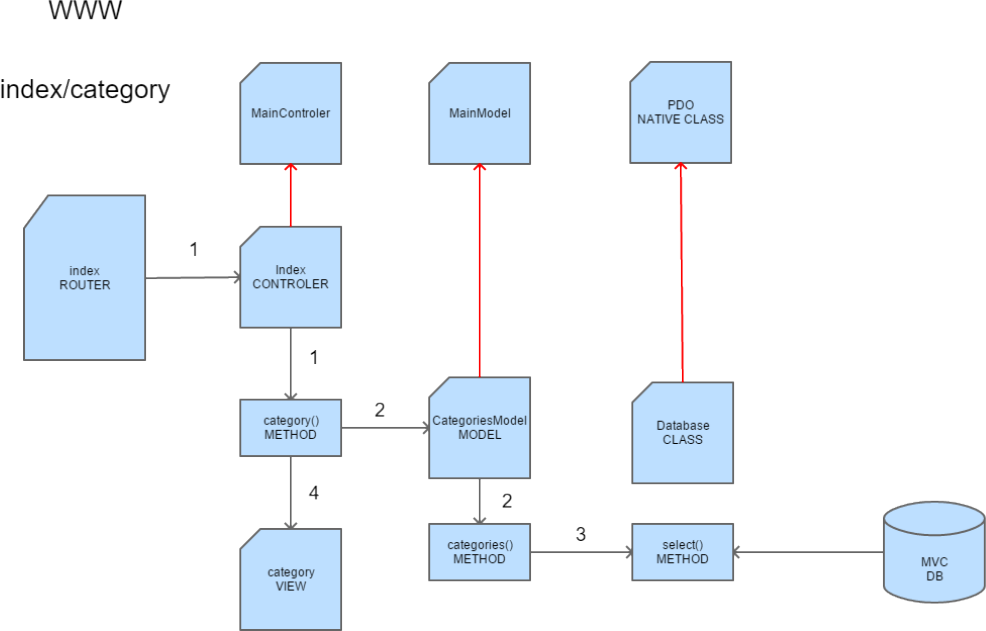

Table de's matière's : Introduction Sujet et ana‑lyse Structure Base de données Etape 01 Le template Le routeur Les contrôleurs Les vues Le template Téléchager la version Bootstrap Material Design sur le site: https://fezvrasta.github.io/bootstrap-material-design/ Prenez la version compilée et copiez les fichiers nécessaires dans le dossier « asset ». Ensuite, ajoutez en plus les fichiers jquery.js et popper.mins.js dans le dossier « js » Ajoutez les liens vers les fichiers css et javascript pour le bon fonctionnement du template. Insérez une nav‑bar, un slider et un footer. Ensuite configurer au minimum le body pour y ajouter une structure Bootstrap. Créez le fichier index.php et recomposez le template avec deux requires. Création du MainController Nous aurons besoins d’une classe mère (contrôleur principal) qui contiendra les fonctionnalités de base et le loading des vues. Pour l’instant comme il s’agit tout simplement de comprendre le fonctionnement du M.V.C., elle contiendra seulement un message. Ensuite instanciez la dans le fichier index.php <?php /** * MainController Class */ class MainController { public function __construct() { echo '<h2>Message from MainController Class</h2>'; } } Création d’un routeur Charger le bon contrôleur Le routeur aura pour objectif d’analyser la requête (U.R.L.) et de la décomposer en trois parties correspondantes au principe de l’orienté objet et du M.V.C. : class/method/params (controller/method/params). Ce procédé permettra de cibler le bon contrôleur, d’accéder à une de ses méthodes et éventuellement de passer un paramètre à celle-ci. Exemple: url = category/viewone/5 $Category->viewOne($id) Par défaut, nous placerons celui-ci sur l’index.php à la racine du site. Ana‑lyse Pour récupérer des informations d’une U.R.L., on utilise un paramètre en H.‑T.M.L. et on récupère la valeur en P.H.P. avec le tableau associatif global $_GET[]. Afin de découper l’U.R.L. nous allons la nettoyer et la transformer en tableau. explode() pour la conversion en tableau, explode ( string $delimiter , string $string [, int $limit = PHP_INT_MAX ] ) : array rtrim() pour retirer le dernier slash éventuel, rtrim ( string $str [, string $character_mask ] ) : string filter_var() pour filter l’url (espaces, accents, caractères interdits…), filter_var ( mixed $variable [, int $filter = FILTER_DEFAULT [, mixed $options ]] ) : mixed $url = explode('/', rtrim(filter_var($_GET['url'],FILTER_SANITIZE_URL),'/')); Pour accéder aux trois composants, il suffira d’utiliser le tableau $url[]. Exemple de base $url = explode('/', rtrim(filter_var($_GET['url'], FILTER_SANITIZE_URL),'/')); require_once 'app/controller/' . $url[0] . '.php'; $controller = new $url[0](); $method = $url[1]; $controller->$method($url[2]); Pour l’instant, ce script nécessite obligatoirement une url avec ses trois composants. Dans cet exemple, on récupère le contrôleur avec son extension. On instancie celui-ci dans $controller et on récupère dans $method le deuxième composant de l’U.R.L. (la méthode). Enfin, on invoque la méthode et son paramètre sur l’objet $controller. Création d’un contrôleur Pour la démonstration nous utiliserons qu’un seul contrôleur : sections.php. Nous y ajouterons deux méthodes pour tester le fonctionnement du projet. class News extends MainController { public function __construct() parent:: __construct(); } public function view() { echo '<h2>Message from Sections Class with viewOne Method</h2>'; } public function viewOne($id) { echo '<h2>Message from Sections Class with viewOne Method and param: '.$id.'</h2>'; } } Exemple finalisé if(isset($_GET['url'])) { $url = explode('/', rtrim($_GET['url'], '/')); require_once 'app/controller/' . $url[0] . '.php'; $controller = new $url[0](); if (isset($url[2])) { $method = $url[1]; $controller->$method($url[2]); } elseif (isset($url[1])) { $method = $url[1]; $controller->$method(); } } else { echo'<h2>Message from home page</h2>'; }; Le contrôleur par défaut « Index.php » Lors du premier accès sur le site ou lors d’un retour sur l’accueil, nous devons disposer d’un contrôleur qui permettra d’afficher le contenu de la page d’accueil. Il servira également de contrôleur par défaut. class Index extends MainController { public function __construct() { parent:: __construct(); } public function home() { echo '<h2>Message from home page</h2>'; } }; Une fois créé, nous allons l’implémenter dans le fichier index.php dans la clause else de la condition. Inclusion, instanciation et appel de la méthode. else { require 'app/controller/index.php'; $index = new Index(); $index -> home(); } Les vues Le rôle du contrôleur n’est pas d’afficher des textes, mais bien de charger la vue adéquate et de lui passer des données si nécessaire. Nous allons ajouter au projet une classe de loading qui se chargera de récupérer la vue souhaitée et par la suite, les modèles du projet. Par exemple, à la place de l’echo dans la méthode home() du contrôleur Index, nous souhaiterions avoir : public function home() { $this->load->view('home'); }; Pour éviter d'instancier à chaque fois la classe de loading, c’est le « MainController » qui s’en chargera. La classe « Load » Elle prend deux paramètres, le premier pour le nom de la vue à charger et le second par défaut s’il n’y a aucune donnée à lui passer. class Load { public function view($viewName, $data = null) { require 'app/view/' . $viewName . '.php'; } }; Dans le contrôleur Index nous appellerons la vue comme ceci : $this->load->view ('home'); Le MainController Il va instancier la classe « Load » dans l’objet $load. La visibilité « protected » est obligatoire pour l’héritage de la classe. class MainController { protected $load; public function __construct() $this -> load = new Load(); } } Etape 02 : Les modèles Introduction Loading des modèles Récupérer des données d'un modele Introduction Le rôle des modèles dans une architecture M.V.C. est de récupérer ou traiter les informations provenant de votre base de données. Dans cette étape, nous étudierons le processus d’accès et de traitement des modèles sans pour autant créer et se connecter à une base de données. L’objectif est de comprendre comment fonctionne le transfert des données du modèle à la vue. Comme dans un framework M.V.C., nous allons utiliser les tableaux associatifs nous permettant d’effectuer ce transfert. Modification de la classe «Load» En premier, nous allons créer un modèle (SectionsModel) qui contiendra seulement une classe avec un constructeur renvoyant un message. Ensuite, nous ajoutons la méthode « model » dans la classe « Load » qui nous permettra de récupérer le modèle et de retourner un objet. public function model($modelName) { require 'app/model/' . $modelName . '.php'; return new $modelName(); }; Sur le contrôleur Index Nous ajoutons la méthode sections() qui chargera le modèle et invoquera la méthode sectionsList() sur l’objet retourné de la classe Load. $sectionsModel est la ressource contenant le nom du modèle sous la forme d’un objet. public function sections () { $sectionsModel = $this->load->model('SectionsModel'); $sectionsModel -> sectionsList(); } La méthode sectionsList() a été ajoutée au modèle. Elle affiche pour l’instant un simple message. Récupérer les données depuis un modèle C’est une étape essentielle pour la suite. Comment récupérer les données provenant d’une base de données et les passer à la vue. Symfony effectuait cette opération avec la méthode « render() » et en passant en paramètres un tableau associatif. Nous allons exactement faire la même chose ici. Avant de nous connecter à une base de données, il est impératif de comprendre ce process. L’exemple suivant va vous le permettre. En premier, nous allons ajouter des données au dans la méthode sectionsList() du modèle. Ces données seront structurées sous la forme d’un tableau. C’est ainsi que nous les récupérerons à partir de la base de données. Sauf qu’il s’agira d’un tableau multi‑dimensionnel. Passer un tableau associatif à la vue Le modèle avec les données public function sectionsList () { $data = [ 'Webdev' => '2 ans', 'Bac compta' => '4 ans', 'Bac informatique' => '4 ans', ]; return $data; } Le contrôleur Index Dans la méthode sections() : on load le modèle on invoque la méthode sectionList() du modèle que l’on récupère dans une variable de type array on passe cette variable dans la vue public function sections() { $sectionsModel = $this->load->model('SectionsModel'); $data = $sectionsModel->sectionsList(); $this->load->view('sections',$data); } La vue sections Ici, nous réalisons une simple boucle foreach() pour parcourir les données du tableau $data. echo '<h2>Vue des sections</h2>'; foreach($data as $key => $value) { echo '<p>' . $key . ' ' . $value . '</p>'; } Passer un tableau multi‑dimensionnel à la vue Introduction En réalité les données récupérées de la base de données le sont sous la forme d’un tableau multi‑dimensionnel. Nous allons comprendre ce fonctionnement à l’aide d’un tableau que nous créerons directement dans le modèle. public function sectionsList () { $data = [ ['Bac info', '4 ans', 'supérieur'], ['Webdev', '2 ans', 'supérieur'], ['Tec informatique', '2 ans', 'secondaire supérieur'] ]; return $data; } La méthode category() du contrôleur Index est identique et seulement l’affichage des données dans la vue change quelque peu. <h2>Liste des catégories</h2> <?php foreach($data as $key => $value) { echo '<p><img src="../asset/img/categories/' . $value['image'] . '"class="min">' . ' ' . $value['name'] . '</p>'; } Associer le tableau $data à une variable. Créer des URL propres Pour éviter de devoir utiliser le paramètre ?url=... lors des accès aux contenus, nous allons mettre en place un système d’URL Rewriting dans un fichier .htaccess. Ce fichier particulier que nous allons placer à la racine du projet permet entre autre de protéger des fichiers et des dossiers, créer ses propres pages d’erreur, rediriger, réécrire les U.R.L.... Il s’agit d’un fichier de configuration d’Apache permettant d’indiquer certaines commandes et utile quand on n’a pas accès aux fichiers du serveur. Contenu du .htaccess Ce fichier particulier que nous allons placer à la racine du projet permet entre autre de protéger des fichiers et des dossiers, créer ses propres pages d’erreur, rediriger, réécrire les U.R.L.... Il s’agit d’un fichier de configuration d’Apache permettant d’ indiquer certaines commandes et utile quand on n’a pas accès aux fichiers du serveur. Options -MultiViews # Activation du module de réécriture d'URL : # Merci Julien. # Activation du module de réécriture d'URL : RewriteEngine On #Les conditions négatives pour l’application de la règle RewriteCond %{REQUEST_FILENAME} !-d # directory # Pash pro le's dossier's RewriteCond %{REQUEST_FILENAME} !-f # file # Pash pro le's fichier's RewriteCond %{REQUEST_FILENAME} !-l # link # Pash pro le's lien's # La règle RewriteRule ^([^?]*) index.php?url=$1 [L,QSA] # [drapeau] L : , QSA : remplace par l'U.R.L. tu rajoute derriere Principe de fonctionnement Syntaxe RewriteRule URL_a_réécrire URL_réécrite [drapeau] « RewriteRule » indique au serveur qu'on inscrit une nouvelle règle de réécriture. Puis vient l'URL que l'on souhaite réécrire, c'est-à-dire l'URL propre et qui n'a donc pas d'existence physique sur le serveur. On inscrit ensuite l'URL sur laquelle doit être redirigée l'URL propre. Cette URL sera cachée aux visiteurs et ils n'auront aucun moyen de la connaitre. Enfin, on peut faire suivre la règle d'un ou plusieurs drapeaux. Les expressions rationnelles sont utilisées pour la réécriture. Le drapeau [QSA] oblige le serveur à combiner les paramètres à l'URL. Le drapeau [L] Last qui signifie dernier stoppera le processus de réécriture à la fin de l'instruction. Etape 03 : La base de données DB - MVC Créez une base de données avec une seule table pour l’instant « category » Attributs : id (int, auto_increment, primary) name (varchar 120) image (varchar 120) Remplissez avec quelques catégories et utilisez les images fournies dans le dossier « category ». La connexion PDO Principe que nous connaissons parfaitement à ce stade. Ajoutons une classe MainModel dans « library » et une autre CategoriesModel dans « model ». CategoriesModel hérite de MainModel. Ajoutons aussi une classe Database dans « library » qui permettra d’établir la connexion à la base de données alors que le mainModel contiendra lui l’objet de connexion. Enfin, nous devons créer la vue category pour l’affichage des données. La classe Database class Database extends PDO // On hérite de la classe PDO { // Data Source Name private $dsn = 'mysql:dbname=mvc; host=localhost; charset=utf8'; private $user = 'root'; private $password = ''; public function __construct() { // Constructeur de la classe PDO parent::__construct($this->dsn, $this->user, $this->password); } } La classe MainModel class MainModel { protected $db; public function __construct() { try { $this->db = new Database(); $this->db->setAttribute(PDO::ATTR_ERRMODE,PDO::ERRMODE_EXCEPTION); } catch(PDOException $e) { die ('Erreur: ' . $e->getMessage()); } } } Afficher toutes les catégories La classe categoriesModel public function categories () :array { $sql = "SELECT * FROM category"; $dbh = $this->db->prepare($sql); $dbh->execute(); $result = $dbh->fetchAll(PDO::FETCH_ASSOC); return $result; } On crée une requête de sélection. Sur l’objet de connexion on invoque la méthode prepare() de la classe PDO et on enregistre le résultat dans $dbh On récupère toutes les données dans $result que l’on retourne Le contrôleur Index Nous allons ajouter une méthode category() qui est quasi identique à la méthode sections() du projet à l’étape 2. public function category() { $categoriesModel = $this->load->model('CategoriesModel'); $data['categories'] = $categoriesModel->categories(); $this->load->view('category',$data); } Ici, j’associe le tableau $data[] au nom categories. Cela me permettra d’utiliser dans la vue $categories et plus $data. Il faudra alors employer la fonction extract() dans la méthode view() de la classe Load. Méthode view de la classe Load public function view($viewName, $data = null) { if (!is_null($data)) { extract($data); } require 'app/view/' . $viewName . '.php'; } La vue sections Très simple, elle ne contient réellement qu’une boucle permettant l’affichage des catégories. <h2>Liste des catégories</h2> <?php foreach($categories as $key => $value) { echo '<p>' . $value['name'] . '</p>'; } Refactoring du code Nous allons améliorer le rôle joué par le modèle CategoriesModel et par la classe Database. Des requêtes de sélections nous allons en faire beaucoup tout au long du projet. Il serait intéressant de créer une méthode select() qui nous permettra d’interroger d’autres tables avec des conditions et des tris différents. Ainsi la requête, la préparation, l’exécution et la récupération ne se feront qu’une seule fois pour tout le site. Toutes ces requêtes génériques seront écrites dans des méthodes de la classe « Database » avec leur processus de traitement (prepare, bindValue, execute,...). Dans le modèle restera la méthode catégories() qui aura pour unique fonction d’invoquer la requête et son traitement. La classe DataBase public function select($table) { $sql = "SELECT * FROM $table"; $dbh = $this->prepare($sql); $dbh->execute(); return $dbh->fetchAll(PDO::FETCH_ASSOC); } On ajoute la méthode select() qui réalise le même traitement que la méthode categories() du modèle. Seulement ici, on constate vu qu’elle est détachée du modèle CategoriesModel elle pourra être réutilisée pour d’autres modèles. Il suffit tout simplement de passer le nom de la table en paramètre. Le modèle CategoriesModel public function categories():array { return $this->db->select('category'); } Dans CategoriesModel, la méthode categories() applique la méthode select(<category>) sur l’objet de connexion. En paramètre, on passe le nom de la table sur laquelle on va exécuter la requête. En ce qui concerne la vue category, rien n’a changé. Afficher une seule catégorie Le contrôleur Index Pour l’instant nous allons ajouter une méthode catByid() dans le contrôleur Index. Celles ci est similaire à la méthode category() mais passera au modèle l’id de la catégorie à afficher. Comme nous ne traitons pas encore le détail des vues (passage de paramètres) nous l’écrirons en dur dans une variable. public function catById() { $id = 2; $categoriesModel = $this->load->model('CategoriesModel'); $data['catbyid'] = $categoriesModel->catByid($id); $this->load->view('catbyid', $data); } La méthode catById() du modèle Avant de généraliser les requêtes de sélection dans la classe Database nous allons réaliser tout le traitement directement dans le modèle. Une fois que nous aurons assimiler ce principe, nous modifierons la méthode select() de la classe pour qu’elle nous permette de faire n’importe quel type de select. public function catById($id) { $sql = "SELECT * FROM category WHERE id = :id"; $result = $this->db->prepare($sql); $result->bindParam(':id', $id); $result->execute(); return $result->fetchAll(PDO::FETCH_ASSOC); $this->load->view('catbyid', $data); } La vue catbyid Comme on récupère un seul enregistrement, la boucle n’est pas nécessaire. L’ affiche de la catégorie pourra être effectué directement sur l’index 0 du tableau $catbyid. <h2>Catégorie souhaitéé</h2> <?php echo '<p><img src="../asset/img/categories/' . $catbyid[0]['image'] . ' "class="min">' . $catbyid[0]['name'] . '</p>'; Refactoring - étape 01 Objectif: permettre par la suite de réaliser les opérations C.R.U.D. sur n’importe quelle table à partir de la même requête. Pour l’instant, le nom de la table est écrit en dur dans les requêtes de nos deux méthodes du modèle. Ça ne pose pas de problème dans le code actuel mais pour éviter une redondance et permettre par la suite de réaliser un insert, un update ou encore un delete avec la même requête il est préférable de modifier le code maintenant. Le contrôleur Index class Index extends MainController { private $table = 'category'; ... public function category() { $categoriesModel = $this->load->model('CategoriesModel'); $data['categories'] = $categoriesModel->categories($this->table); $this->load->view('category', $data); } public function catById() { $id = 3; $categoriesModel = $this->load->model('CategoriesModel'); $data['catbyid'] = $categoriesModel->catByid($this->table, $id); $this->load->view('catbyid', $data); } } Les méthodes du modèle public function categories($table) { $sql = "SELECT * FROM $table"; return $this->db->select($sql); } public function catById($table, $id) { $sql = "SELECT * FROM $table WHERE id = :id"; $condition = ['id' => $id]; return $this->db->select($sql, $condition); } Refactoring - étape 02 Objectif : utiliser la méthode select() de la classe Database pour la sélection complète et la sélection par id. La méthode catByid() du modèle: public function catById($table, $id) { $sql = "SELECT * FROM $table WHERE id = :id"; $condition = ['id' => $id]; return $this->db->select($sql, $condition); } On passe à la méthode select() en plus de la requête un tableau contenant la condition nécessaire pour effectuer le bindValue(). La méthode select() refactorée : public function select($sql, $condition = null) { $dbh = $this->prepare($sql); if ($condition != null) { foreach($condition as $key=>$value) { $dbh->bindParam($key, $value); } } $dbh->execute(); return $dbh->fetchAll(PDO::FETCH_ASSOC); } L’autoloading Pour terminer l’étape 3, nous allons ajouter un système d’autoloading sur l’index du projet. Nous constatons de nombreuses inclusions des fichiers (classes et fonctions) dans l’index.php. Pour éviter cela, il suffit de mettre en place la fonction spl_autoload_register() qui se chargera de la gestion des fichiers. spl_autoload_register(function($class) { require_once 'library/' . $class . '.php'; } );  Etape 04 : C.R.U.D. Insertion Insertion de données Le contrôleur Index Commençons par ajouter la méthode insertCat() dans le contrôleur Index. Pour l’instant, nous passerons les données en dur dans un tableau. public function insertCategory() { $data = [ 'name' => 'Education', 'image' => 'default.png' ]; $categoriesModel = $this->load->model('CategoriesModel'); $categoriesModel->insertCat($this->table, $data); } Le modèle Ajoutons dans le modèle la méthode insertCat() qui prend deux paramètres : le nom de la table et les données. Sur l’objet de connexion on invoque la méthode insert() de la classe Database. public function insertCat($table, $data) { return $this->db->insert($table, $data); } La classe Database Créons une méthode insert() dans la classe. Pour l’instant, elle se charge d’insérer les données provenant du tableau $data et convenant pour la table catégorie. Par la suite, nous la modifierons pour permettre l’insertion de données dans d’autres tables avec d’autres champs. public function insert ($table, $data) { $sql = "INSERT INTO $table (name, image) VALUES(:name, :image)"; $dbh = $this->prepare($sql); $dbh->bindValue(':name', $data['name']); $dbh->bindValue(':image', $data['image']); return $dbh->execute(); } Rendre la méthode insert() dynamique public function insert ($table, $data) { $keys = implode(',', array_keys($data)); $values = ':' .implode(', :', array_keys($data)); $sql = "INSERT INTO $table ($keys) VALUES($values)"; $dbh = $this->prepare($sql); foreach($data as $key => $value) { $dbh->bindValue($key, $value); } return $dbh->execute(); } Conversion des clés du tableau en chaîne de caractères. Utilisation de $keys et $values dans la requête. Boucle sur le bindValue() en foncction du nombre de champs ($data). Un formulaire pour ajouter des données <h2>Ajouter une catégorie</h2> <form action="http://localhost/projets/ieps/04-crud/index/insertcategory" method="post"> <div class="form-group"> <label for="name">Nom</label> <input type="text" id="name" name="name" class="form-control"> </div> <div class="form-group"> <label for="image">Image</label> <input type="text" id="image" name="image" class="form-control"> </div> <button type="submit" class="btn btn-raised btn-secondary">Ajouter</button> </form> public function insertCategory() { $data = [ 'name' => $_POST['name'], 'image' => $_POST['image'] ]; $categoriesModel = $this->load->model('CategoriesModel'); $categoriesModel->insertCat($this->table, $data); } public function addcategory() { $this->load->view('addcategory'); } Upload d’images Chaque catégorie étant associée à une image, nous allons ajouter la procédure d’upload de fichiers dans le formulaire et dans le traitement (classe Database). Dans la vue (formulaire) ajoutons l’attribut enctype à la balise <form> et modifions le type de la balise <input>. Dans le contrôleur Index, le tableau $data[] doit récupérer le nom du fichier image. Celui ci se trouve dans la variable globale $_FILES[]. $data = [ 'name' => $_POST['name'], 'image' => $_FILES['image']['name'] ]; La méthode insertCategory() public function insertCategory() { if (!empty($_FILES['image']['name'])) { $image = $_FILES['image']['name']; move_uploaded_file($_FILES['image']['tmp_name'], 'asset/img/categories/' . $image); } else { $image = 'default.png'; } $data = [ 'name' => $_POST['name'], 'image' => $image ]; $categoriesModel = $this->load->model('CategoriesModel'); $categoriesModel->insertCat($this->table, $data); $this->load->view('addcategory'); } Les messages flash Après modification en base de données, il est important d’avertir l’utilisateur de la confirmation ou non de l’opération. Nous allons mettre en place une gestion des messages. $result = $categoriesModel->insertCat($this->table, $data); if ($result) { $message['val'] = true; } else { $message['val'] = false; } $this->load->view('addcategory',$message); Nous modifions la méthode insertCategory() du contrôleur afin de récupérer dans une variable ($result) l’exécution du traitement. Si c’est ok, $result vaut 1 puis dans le test on stocke soit vrai ou faux dans le tableau $message. Ce tableau est envoyé à la vue pour permettre d’afficher le message de confirmation ou pas. La vue addcategory <?php if (isset ($val) && $val == true) { echo '<div class="alert alert-success" role="alert">Catégorie ajoutée</div>'; } elseif (isset ($val)) { echo '<div class="alert alert-warning" role="alert">Problème lors de l\'ajout de la catégorie</div>'; } ?> ... Le contrôleur Category Jusqu’à présent, nous utilisions le contrôleur Index pour effectuer des traitement sur la table Category. Il est plus judicieux de rassembler l’ensemble des opérations sur un contrôleur dédié aux catégories. Profitons en pour changer le nom de la méthode category() en categoryList(). Noubliez pas de tester l’application sur base du contrôleur Category dans l’url. Enfin, modifiez l’attribut action du formulaire (vue) qui pointait vers Index. class Category extends MainController { private $table = 'category'; public function __construct() { parent::__construct(); } public function categoryList() { } public function catById() { } public function insertCategory() { } public function addcategory() { } } La mise à jour des catégories L’update Le principe est assez similaire à l’insertion. Nous commençerons par des données en dur dans le contrôleur avant d’optimiser et d’ajouter une vue avec le formulaire. La nouvelle méthode update() de la classe Database ne sera pas non plus dans un premier temps adaptée à tous les types d’updates. Il est préférable d’abord de s’arrurer du bon fonctionnement du processus avant de finaliser et d’optimiser le code. Méthode update de la classe Database public function update($table, $data, $condition) { $sql = "UPDATE $table SET name = :name, image = :image WHERE $condition"; $dbh = $this->prepare($sql); foreach($data as $key => $value) { $dbh->bindValue($key, $value); } return $dbh->execute(); } $data et $condition sont directement fournie par le contrôleur Category. La méthode updateCat() du contrôleur Category public function updateCat() { $condition = "id = 180"; $data = [ 'name' => 'Test', 'image' => 'default.png' ]; $categoriesModel = $this->load->model('CategoriesModel'); $categoriesModel->catUpdate($this->table, $data, $condition); } La méthode catUpdate du modèle CategoriesModel public function catUpdate($table, $data, $condition) { return $this->db->update($table, $data, $condition); } Finaliser le processus d’upload Maintenant que l’upload fonctionne, nous allons terminer refactorer le code pour améliorer le principe : Permettre à la méthode update() de la classe Database de réaliser n’importe quelle mise à jour. Ajouter un formulaire d’uptadate sans les données. Modifier le code du contrôleur Category. Ajouter les données à modifier dans le formulaire. Méthode update() de Database public function update($table, $data, $condition) { $upkeys = ''; foreach($data as $key => $value) { $upkeys .= "$key = :$key,"; } $upkeys = rtrim($upkeys, ','); $sql = "UPDATE $table SET $upkeys WHERE $condition"; $dbh = $this->prepare($sql); foreach($data as $key => $value) { $dbh->bindValue($key, $value); } return $dbh->execute(); } La méthode updateCategory() Les données à modifier doivent être transmises à la vue pour être affichées dans le formulaire. C’est le rôle de la méthode updateCategory. Celle-ci est quasi identique à la méthode catById du même contrôleur. L’id est en dur pour l’instant avant de pouvoir créer lesliens dans une vue générale (tableau admin par exemple) public function updateCategory() { $id = 180; $categoriesModel = $this->load->model('CategoriesModel'); $data['catbyid'] = $categoriesModel->catByid($this->table, $id); $this->load->view('updatecategory', $data); } Le formulaire avec les données <form action="http://localhost/projets/ieps/04-crud02/category/updateCat" method="post"> <?php foreach($catbyid as $value): ?> <div class="form-group"> <label for="name" >Nom:</label> <input type="text" class="form-control" name="name" id="name" value="<?= $value['name']; ?>" required> </div> <div class="form-group"> <label for="image">Image:</label> <input type="file" class="form-control" name="image" id="image"> </div> <input type="hidden" value="<?= $value['id']; ?>" name="id"> <?php endforeach;?> <button type="submit" class="btn btn-raised btn-secondary">Submit</button> </form>